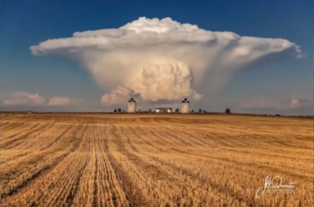
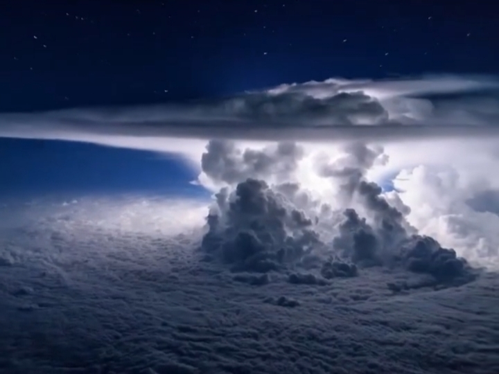
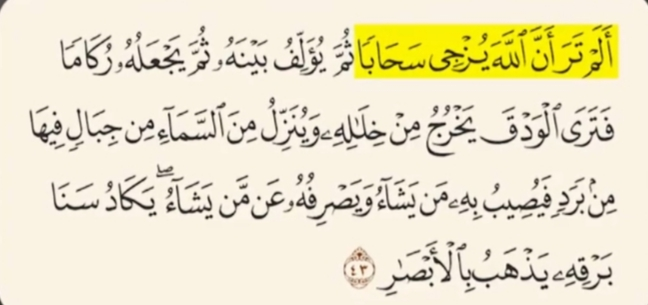
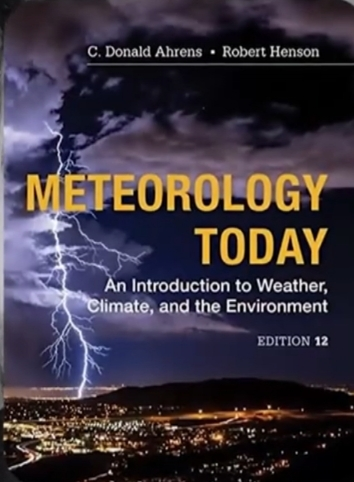
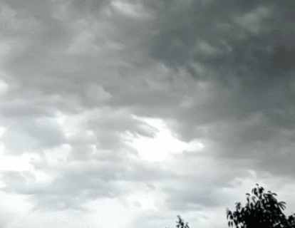
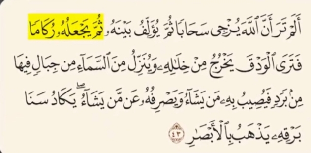
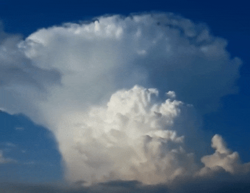
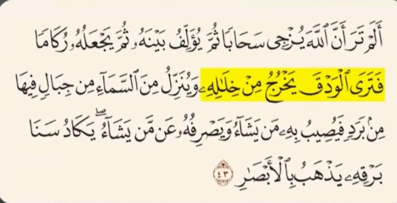
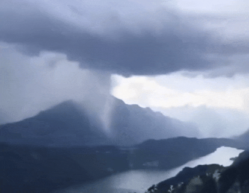
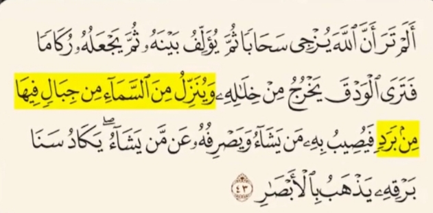

لوک هاوارد شیمیدان و هواشناس انگلیسی
در سال 1803 میلادی اولین فردی بود که نام کومولونیمبوس رو روی ابر های بزرگی گذاشت که توانایی ایجاد تگرگ و رعد و برق دارن
لوئیس جی باتن شیمیدان و هواشناس آمریکایی و از بزرگترین دانشمندان هواشناسی
در سال 1961 در کتاب خود به نام ماهیت طوفان های سهمگین میگه :
ابر های کومولونیمبوس به دلیل گسترش عمودی شدید مانند کوه های بزرگ در آسمان دیده میشن و تا ارتفاع 12 تا 20 کیلومتری رشد میکنند این ابر ها از ارتفاع37 هزار پایی دقیقا شبیه کوه های بزرگ دیده میشن
خداوند 1400 سال پیش در آیه 43 سوره نور به توصیف مرحله به مرحله این پدیده پرداخته و میفرماید
در کتاب هواشناسی امروز اثر سی. دونالد آرنز میگه
شکل گیری ابر ها با جریان آرام هوا آغاز میشه که بخار آب به تدریج بالا میره و باعث حرکت آرام ابر ها میشه این حرکت آرام دقیقا با توصیف آیه درباره رانده شدن ابر ها همخوانی کامل داره
و خداوند میگه :
دکتر جان ام والس در کتاب علوم جوی میگه :
ابر ها به تنهایی قادر به بارش نیستند بلکه باید با همدیگر ترکیب بشن تا رطوبت کافی برای بارندگی داشته باشند این مرحله با پیوستن چند ابر کوچک و تبدیلشان به یک سیستم بزرگ انجام میشه
در ادامه آیه خداوند میگه :
به گفته کتاب مقدمه ای بر هواشناسی نوشت ادوارد جی تاپراگ
ابر های کومولونیمبوس توده های بسیار بلند و متراکم اند که ارتفاعی بین 10 تا 15 کیلومتر دارند و منشاء طوفان ، رعد و برق , و تگرگ هستند
سپس خداوند می فرماید :
بر اساس کتاب دینامیک جو نوشته جیمز آر اولتون درون این ابر ها قطرات باران از میان کانال ها و شکاف های ابر پایین می افکند که با عبارت یَخرج مِن خِلالِهِ کاملا هماهنگه
و سپس خداوند می فرماید :
درکتاب علوم جوی نوشته جان ام والت اومده که تگرگ در لایه های بالای ابر های طوفانی شکل میگیره
جایی که دما زیر صفره این لایه های بلند که از نظر ظاهری مثل کوه های در آسمان هستند درست همون توصیف فوق العاده ای که خداوند در آیه 43 سوره نور درباره این ابرها میکنه
این آیه با دقت بی نظیر مراحل شکل گیری ابر های باران زا ، متراکم شدن اونها بارش باران و شکل گیری تگرگ در لایه های بالایی ابرها رو بیان میکنه اون هم در زمانی که هیچ ابزار علمی برای درک این پدیده ها وجود نداشته بیانی فراتر از دانش بشر در زمان نزول قرآن این یعنی اعجاز